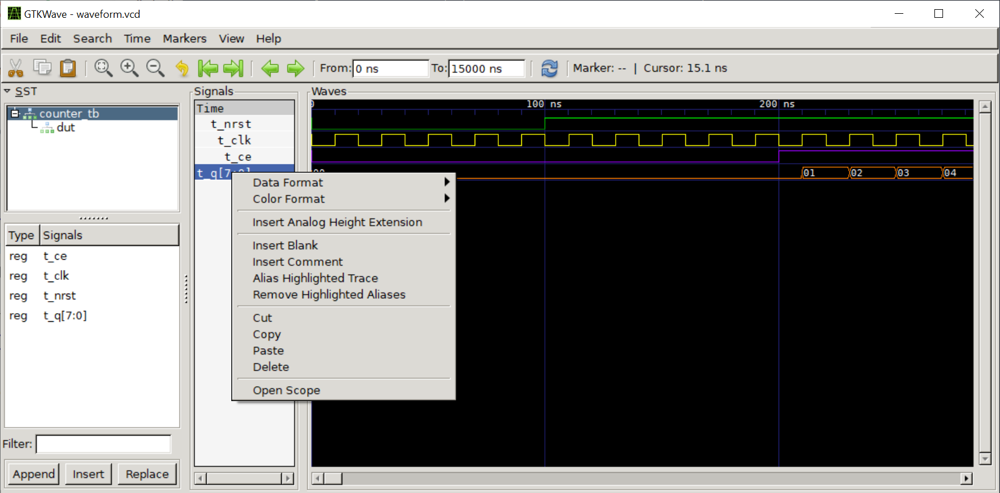

การจำลองการทำงานของโค้ด VHDL ด้วย GHDL Simulator#
▷ VHDL Simulator#
VHDL เป็นภาษาคอมพิวเตอร์ในกลุ่ม HDL (Hardware Description Language) ใช้อธิบายการทำงานของวงจรลอจิก (Logic Circuits) หรือ สร้างโมเดลของวงจรดิจิทัล และสามารถจำลองการทำงานได้ โดยเขียนโค้ดให้อยู่ในรูปของ VHDL Testbench
ในการออกแบบวงจรดิจิทัลโดยใช้ชิปที่มีทรัพยากรโปรแกรมได้เชิงลอจิกโดยผู้ใช้ เช่น FPGA (ชิปที่ได้รับความนิยมก็เป็นของบริษัท Intel/Altera หรือ AMD/Xilinx) ซอฟต์แวร์ของบริษัทดังกล่าว เช่น Intel Quartus Prime Lite หรือ Xilinx Vivado WebPACK Edition มักจะมาพร้อมกับซอฟต์แวร์ ModelSim หรือ Questa ซึ่งเป็น VHDL/Verilog Simulator แม้ว่าจะเป็นเวอร์ชันทดลองใช้งานได้ฟรี แต่ก็มีขนาดไฟล์สำหรับการติดตั้งค่อนข้างใหญ่
GHDL เป็น Open Source VHDL Simulator สำหรับจำลองการทำงานของวงจรดิจิทัลที่ใช้ภาษา VHDL โดยทั่วไปแล้ว การใช้งาน GHDL จะอยู่ในรูปแบบของคำสั่ง Command-Line เพื่อคอมไพล์โค้ด VHDL และจะได้เป็นไฟล์โปรแกรมที่รันได้
เมื่อรันโปรแกรมแล้ว ไฟล์เอาต์พุตที่ได้จะเป็นไฟล์ .vcd ที่บันทึกการเปลี่ยนแปลงค่าลอจิกของสัญญาณต่าง ๆ ในวงจร และสามารถนำไปใช้กับโปรแกรม เช่น GTKWave เพื่อแสดงผลรูปคลื่นสัญญาณ (Signal Waveforms) ที่ได้จากการจำลองการทำงาน
บทความนี้จะสาธิตการติดตั้งและใช้งาน GHDL สำหรับ WSL2-Ubuntu และ GTKWave for Windows เพื่อการจำลองการทำงานของวงจรดิจิทัลเท่านั้น ยังไม่เกี่ยวข้องกับการสังเคราะห์วงจร (Logic Synthesis) จากโค้ดภาษา VHDL แม้ว่าโค้ดตัวอย่างในภาษา VHDL จะสามารถนำไปสังเคราะห์เป็นวงจรสำหรับชิป FPGA ได้
▷ VHDL Model: Up Counter#
ถัดไปเป็นตัวอย่างโค้ด VHDL สำหรับวงจรลอจิกที่ทำหน้าที่นับขึ้น (Upcounter) ตามจังหวะขอบขาขึ้นของสัญญาณ Clock ครั้งละหนึ่ง และมีขนาดของรีจิสเตอร์ตัวนับเท่ากับ 8 บิต
วงจรตัวนับนี้มีส่วนเชื่อมต่อ (Interface) และสัญญาณ I/O ดังนี้
CLKเป็นสัญญาณ Clock (อินพุต)nRSTเป็นสัญญาณควบคุม (อินพุต) สำหรับการรีเซตการทำงานของตัวนับ เพื่อให้รีจิสเตอร์ของตัวนับภายในเริ่มต้นที่ 0 เป็นสัญญาณประเภท Asynchronous Reset และทำงานแบบ Active-LowCEเป็นสัญญาณควบคุมที่เรียกว่า Clock Enable- ถ้าสัญญาณ
CEเป็น1(High) จะมีการนับขึ้นหรือเพิ่มค่าทีละหนึ่ง ตามจังหวะของสัญญาณนาฬิกา - แต่ถ้าสัญญาณควบคุมนี้เป็น
0(Low) จะไม่มีการนับขึ้นและค่าของตัวนับจะไม่เปลี่ยนแปลง
- ถ้าสัญญาณ
Q[WIDTH-1..0] เป็นสัญญาณเอาต์พุตหลายบิต ซึ่งใช้พารามิเตอร์ชื่อWIDTHเป็นตัวกำหนดจำนวนบิต (มีค่า Default เป็น 8 บิต)
ในการกำหนดชนิดของสัญญาณ (Signal Types) ในโค้ด VHDL สำหรับวงจรตัวอย่างนี้
ได้เลือกใช้เป็น std_logic (สัญญาณเดี่ยวหนึ่งบิต) และ std_logic_vector (สัญญาณหลายบิต)
ซึ่งมีการประกาศไว้ในแพคเกจชื่อ std_logic_1164 ของไลบรารีตามมาตรฐาน IEEE สำหรับ VHDL
สัญญาณภายในชื่อ regs มีชนิดข้อมูลเป็นแบบ unsigned ซึ่งมีการประกาศไว้ในแพคเกจ
numeric_std ของไลบรารี IEEE สำหรับ VHDL โดยให้มีขนาดหรือจำนวนบิตตามที่กำหนดโดย
WIDTH ของวงจร และจะถูกนำไปใช้เป็นค่าเอาต์พุตที่ขา Q ของวงจรนี้
โค้ดตัวอย่างสำหรับวงจรนับ (ไฟล์ counter.vhd) มีดังนี้
library ieee;
use ieee.std_logic_1164.all;
use ieee.numeric_std.all;
entity counter is
generic( WIDTH : natural := 8 );
port(
CLK : in std_logic;
nRST : in std_logic;
CE : in std_logic;
Q : out std_logic_vector( WIDTH-1 downto 0 )
);
end counter;
architecture behave of counter is
constant ZEROS : unsigned(WIDTH-1 downto 0) := (others => '0');
signal regs : unsigned(WIDTH-1 downto 0) := ZEROS;
begin
process (nRST, CLK)
begin
if nRST = '0' then
regs <= ZEROS; -- reset the register to zero
elsif rising_edge(CLK) and CE = '1' then
regs <= regs + 1; -- increment the register by 1
end if;
end process;
Q <= std_logic_vector(regs);
end behave;
▷ การสร้าง VHDL Testbench สำหรับวงจรนับ#
เมื่อได้สร้างโมเดลของวงจรตัวนับในภาษา VHDL แล้ว ถ้าต้องการตรวจสอบความถูกต้อง
หรือศึกษาพฤติกรรมการทำงานของโมเดลดังกล่าวว่า มีการทำงานเป็นอย่างไร ก็จะต้องเขียนโค้ดเพื่อทดสอบ
ในรูปแบบที่เรียกว่า VHDL Testbench เช่น มีหน้าที่สร้างสัญญาณทดสอบเพื่อป้อนเป็นอินพุตให้กับขา
I/O ของวงจรนับ มีการกำหนดค่าลอจิกให้กับสัญญาณอินพุตของวงจร ได้แก่ nRST, CLK และ CE
ในแต่ละช่วงเวลา แล้วดูว่า สัญญาณเอาต์พุต Q ของวงจรตอบสนองเป็นอย่างไร
รวมถึงการเปลี่ยนแปลงของสัญญาณภายในวงจรด้วยเช่นกัน
ตัวอย่างการเขียนโค้ดเพื่อสร้าง VHDL Testbench
ในไฟล์ counter_tb.vhd
สำหรับวงจรตัวนับ counter.vhd มีดังนี้
library ieee;
use ieee.std_logic_1164.all;
use ieee.numeric_std.all;
entity counter_tb is
-- empty
end counter_tb;
architecture testbench of counter_tb is
-- This is the VHDL component that will be instantiated.
component counter is
generic( WIDTH : natural := 8 );
port(
CLK : in std_logic;
nRST : in std_logic;
CE : in std_logic;
Q : out std_logic_vector( WIDTH-1 downto 0 )
);
end component;
-- internal test signals
constant WIDTH : natural := 8;
signal t_nRST, t_CLK, t_CE : std_ulogic := '0';
signal t_Q : std_logic_vector( WIDTH-1 downto 0 );
begin
-- Instantiate the upcounter as DUT (design under test).
DUT: counter
generic map ( WIDTH => 8 )
port map( CLK => t_CLK, nRST => t_nRST, CE => t_CE, Q => t_Q );
-- create a reset signal
process begin
t_nRST <= '0';
wait for 100 ns;
t_nRST <= '1';
wait; -- wait forever
end process;
-- create a 50MHz clock (periodic) signal
process begin
t_CLK <= '0';
wait for 10 ns;
t_CLK <= '1';
wait for 10 ns;
end process;
-- create a clock enable (CE) signal
t_CE <= '0', '1' after 200 ns, '0' after 10 us;
end testbench;
ในตัวอย่างนี้ ได้มีการสร้างสัญญาณทดสอบดังนี้
- สัญญาณ
t_nRST: ใช้ VHDL Process ในการสร้างสัญญาณ เริ่มต้นให้มีลอจิกเป็น0จากนั้นเมื่อเวลาผ่านไป 100 ns ให้เปลี่ยนเป็น1จากนั้นคงเดิมไม่มีการเปลี่ยนลอจิก - สัญญาณ
t_CLK: ใช้ VHDL Process ในการสร้างสัญญาณ กำหนดให้มีความถี่ 50 MHz หรือ มีคาบเท่ากับ 20 ns (50% Duty Cycle) - สัญญาณ
t_CE: ใช้ประโยคคำสั่งแบบ Concurrent Signal Assignment ในการกำหนดค่าลอจิกของสัญญาณ เริ่มต้นด้วยการกำหนดให้เป็น0แล้วเปลี่ยนเป็น1ที่เวลา 200 ns และเปลี่ยนเป็น0เมื่อถึงเวลา 10 us
▷ การติดตั้ง GHDL สำหรับ WSL2 / Ubuntu#
ถัดไปเป็นการสาธิตการติดตั้งซอฟต์แวร์ GHDL โดยทั่วไปแล้วสำหรับ Linux / Ubuntu ก็สามารถทำคำสั่งได้ดังนี้
$ sudo apt install -y ghdl gtkwave
แต่ในบทความนี้ จะลองใช้วิธีการดาวน์โหลดไฟล์ Source Code มาทำขั้นตอน Build เอง เพื่อให้ได้ไฟล์ไบนารี และติดตั้งเอาไว้ใช้งานในระบบ
การติดตั้ง GHDL เพื่อใช้งานสำหรับ Linux หรือ Windows ศึกษาได้จากเว็บนี้
ทำคำสั่งใน Linux Terminal เพื่อติดตั้งซอฟต์แวร์ที่เกี่ยวข้องดังนี้
$ sudo apt install -y git zlib1g-dev gnat llvm clang build-essential
จากนั้นทำคำสั่งเพื่อดาวน์โหลด Source Code ของ GHDL จาก Github
แล้วทำคำสั่ง configure และ make ตามลำดับ
$ git clone https://github.com/ghdl/ghdl.git
$ cd ghdl
$ ./configure --with-llvm-config
$ make -j 4
$ sudo make install
$ sudo ldconfig
$ cd $HOME
เมื่อทำขั้นตอนทั้งหมดได้สำเร็จแล้ว ก็จะได้โปรแกรม ghdl
เอาไว้ใช้งานในระบบ ลองเรียกใช้คำสั่งดังนี้ (และจะเห็นข้อความเอาต์พุตตามตัวอย่าง)
$ ghdl --version | head -n 4
GHDL 4.0.0-dev (3.0.0.r321.g472cf6443) [Dunoon edition]
Compiled with GNAT Version: 10.4.0
llvm 14.0.0 code generator
Written by Tristan Gingold.
ถัดไปเป็นการลองใช้งาน ghdl เพื่อตรวจสอบโค้ดในไฟล์ VHDL
และคอมไพล์โค้ดเพื่อให้ได้ไฟล์ไบนารี (binary executable) สำหรับ VHDL Testbench
ซึ่งทำหน้าที่เป็น Executable / Runnable Simulator ให้แก่วงจรตัวอย่างตามที่ได้ออกแบบไว้
เมื่อรันโปรแกรมจะได้ไฟล์ .vcd (VCD = Value Change Dump)
ซึ่งเป็นข้อมูลเกี่ยวกับสถานะลอจิกของสัญญาณในวงจร
ทำคำสั่งต่อไปนี้ เพื่อลองตรวจสอบ VHDL Syntax
(-s หมายถึง Syntax Check และ -a หมายถึง Analyze VHDL Code)
ซึ่งจะต้องไม่มี Syntax Error ใด ๆ เกิดขึ้น
ตัวอย่างของคำสั่งต่อไปนี้ ได้ระบุมาตรฐานของ VHDL ให้เป็น --std=08 ซึ่งหมายถึง VHDL-2008
(แต่ถ้าไม่ระบุ ก็จะใช้มาตรฐาน VHDL-1993 เป็น default)
# check the VHDL syntax using VHDL-2008
$ ghdl -s --std=08 counter.vhd counter_tb.vhd
# Analyze VHDL files
$ ghdl -a --std=08 counter.vhd counter_tb.vhd
เมื่อตรวจสอบแล้วว่า โค้ดตัวอย่างมีความถูกต้อง ถัดไปคือ การสร้างไฟล์ไบนารีที่ใช้จำลองการทำงานของวงจร
# Make a executable file for the specified VHDL entity
$ ghdl -m --std=08 counter_tb
จากนั้น จะได้ไฟล์ใหม่เป็นเอาต์พุต ชื่อ counter_tb ทำหน้าที่เป็นไฟล์ Simulator
จากนั้นให้ทำคำสั่งดังนี้ และมีการกำหนดชื่อไฟล์เอาต์พุตแบบ VCD และให้จำลองการทำงานเป็นระยะเวลา 15 us (ไมโครวินาที) เป็นต้น
$ ./counter_tb --vcd=waveform.vcd --stop-time=15us
เมื่อการรันโปรแกรมนี้จบลง ก็จะได้ไฟล์ waveform.vcd และนำไปเปิดดูด้วย GTKWave
โดยทำคำสั่งดังนี้ และจะปรากฏหน้าต่าง GUI ขึ้นมา
ถ้าใช้ WSL2-Ubuntu แนะนำให้ติดตั้งไฟล์ไบนารีของ GTKWave สำหรับ Windows
แล้วเรียกใช้งานจาก Ubuntu Terminal ตัวอย่างเช่น ถ้าได้ติดตั้งโปรแกรมเอาไว้ในไดเรกทอรี
c:\Tools\gtkwave64
$ /mnt/c/Tools/gtkwave64/bin/gtkwave.exe ./waveform.vcd &
เมื่อเปิดโปรแกรม GTKWave มาแล้ว จะยังไม่เห็นรูปคลื่นสัญญาณใด ๆ
ผู้ใช้จะต้องเลือกสัญญาณทั้งหมดของ counter_tb จากรายการ Signals
เมื่อเลือกสัญญาณเหล่านั้นแล้ว ให้กดปุ่ม Insert
จากนั้นสัญญาณที่ได้เลือก จะมาปรากฏในบริเวณ Waves เห็นเป็นรูปคลื่นสัญญาณดิจิทัล เราสามารถขยายหรือย่อในเชิงเวลาได้ (Zoom-In/Out) ตามรูปตัวอย่าง

รูป: ตัวอย่างการแสดงรูปคลื่นสัญญาณจากไฟล์ waveform.vcd โดยสามารถเลือก Data Format
สำหรับสัญญาณที่มีข้อมูลหลายบิต รวมถึงการเลือกสีของเส้นสัญญาณได้ด้วย
รูป: แสดงรูปคลื่นสัญญาณดิจิทัล เมื่อตัวนับเริ่มนับขึ้นหลังจากที่สัญญาณ CE (Clock Enable) เปลี่ยนจาก 0 เป็น 1
ข้อสังเกต: ถ้ามีการแก้ไขโค้ดในไฟล์ VHDL จะต้องมีการคำสั่งคอมไพล์และรันโปรแกรม Simulator ใหม่อีกครั้ง เพื่ออัปเดทไฟล์เอาต์พุต จากนั้นในหน้าต่างของ GTKWave (ไม่จำเป็นต้องปิดแล้วเปิดโปรแกรมใหม่) ก็ให้รีโหลดไฟล์ .vcd อีกครั้ง (Reload Waveform)
▷ กล่าวสรุป#
บทความนี้ได้นำเสนอขั้นตอนการติดตั้งและใช้งานโปรแกรม GHDL (VHDL Simulator) สำหรับ WSL2 / Ubuntu Linux และมีตัวอย่างโค้ด VHDL Testbench สำหรับวงจรนับขึ้นขนาด 8 บิต (8-bit Upcounter) มีการสาธิตการจำลองการทำงานของโค้ดทดสอบและใช้โปรแกรม GTKWave แสดงรูปคลื่นสัญญาณลอจิกที่ได้จากการจำลองการทำงาน
This work is licensed under a Creative Commons Attribution-ShareAlike 4.0 International License.
Created: 2023-07-08 | Last Updated: 2023-07-08